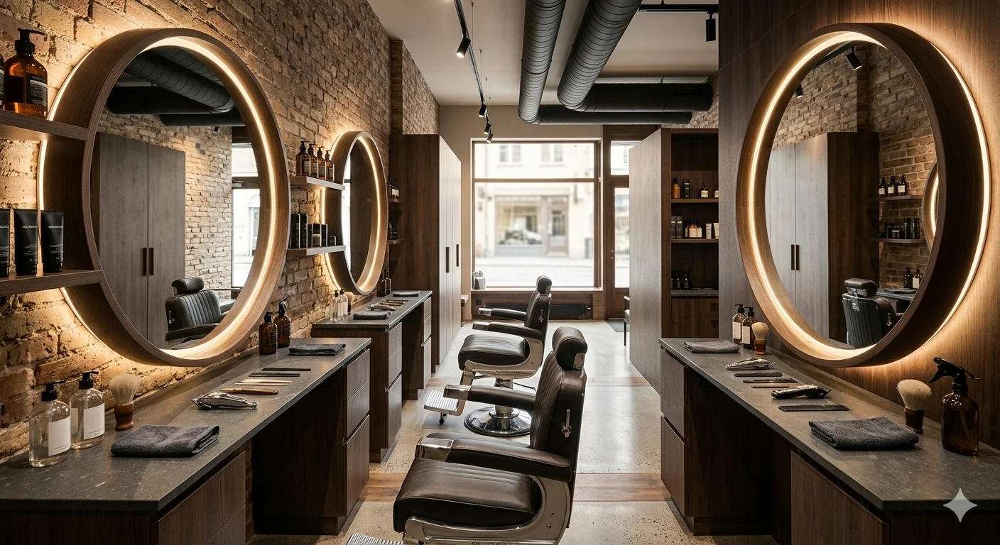

INSIDE THE HOUSE
A room made
for the ritual.
THE GENTLEMAN began with a simple idea: grooming should feel personal again. Our house keeps the pace calm, the conversation easy and the craft uncompromising.
2016Founded
06Days open
01Quiet standard